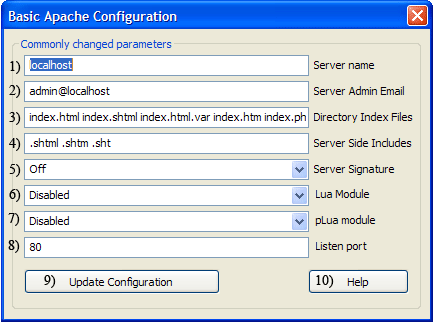

|
|
Mod Lua |
The Lua scripting language has been around since 1993 and was finally integrated into Apache 2.4 primarily for server configuration. Uniform Server ZeroXI uses Apache 2.4.6 this contains the Lua 5.1.5 (core). Although mod_lua is still tagged as experimental it is stable allowing you to work with hooks for Apache configuration and for creating dynamic web applications.
The Uniform Server ZeroXI plugin ZeroXI_lua_1_0_0.exe provides support for Lua. Please note the Lua section is split over several pages and covers this plugin and basic dynamic web-applications in detail. This page covers enabling Mod-Lua and provides detailed configuration information. .
Apache configuration
A default installation of Uniform Server ZeroXI has Lua pre-configured in Apache’s configuration file. All that is required is to enable the Lua module from UniController as follows:
Apache > Edit Basic and Modules > Edit Basic Configuration
(# removed) to enable the line as shown: LoadModule lua_module modules/mod_lua.soThis in turn enables the following configuration block, which loads the configuration file us_lua.conf: # Uniform Server Lua config <IfModule lua_module> Include conf/extra/us_lua.conf </IfModule> |
 |
The configuration file UniServerZ\core\apache2\conf\extra\us_lua.conf contains the following two lines
- AddHandler lua-script .lua
- #AddHandler lua-script .htm .html
Web pages with the file extension .lua are passed to the Lua engine for processing. If you wish you can rename these pages with a file extension of .htm or .html.
For these pages to be processed by the Lua engine enable the AddHandler line (#AddHandler lua-script .htm .html) in us_lua.conf configuration file.
Search Paths - package.path and package.cpath
Search paths in Lua are important for example the Lua require directive looks in both the Lua module and extension path, which are package.path and package.cpath respectively. The default paths configured by Apache mod_lua are:
|
package.path .\?.lua; C:\UniServerZ\core\apache2\bin\lua\?.lua; C:\UniServerZ\core\apache2\bin\lua\?\init.lua; C:\UniServerZ\core\apache2\bin\?.lua; C:\UniServerZ\core\apache2\bin\?\init.lua; |
package.cpath .\?.dll; C:\UniServerZ\core\apache2\bin\?.dll; C:\UniServerZ\core\apache2\bin\loadall.dll; |
These target the Apache binary folder in order to separate Apache from Uniform Server two new folders were created C:\UniServerZ\core\us_lua\lua and C:\UniServerZ\core\us_lua\clibs and added to Lua module and extension paths. The paths are defined in configuration file UniServerZ\core\apache2\conf\extra\us_lua.conf as shown below:
|
Config file:
Paths are defined in config file UniServerZ\core\apache2\conf\extra\us_lua.conf see right: Default Uniform Server pre-configured paths are shown below: |
# LuaPackagePath /path/to/include/?.lua;
LuaPackagePath ${HOME}\core\us_lua\lua\?.lua;
# LuaPackageCPath /path/to/include/?.dll;
LuaPackageCPath ${HOME}\core\us_lua\clibs\?.dll;
|
|
package.path .\?.lua; C:\UniServerZ\core\apache2\bin\lua\?.lua; C:\UniServerZ\core\apache2\bin\lua\?\init.lua; C:\UniServerZ\core\apache2\bin\?.lua; C:\UniServerZ\core\apache2\bin\?\init.lua; C:/UniServerZ/core/us_lua/lua/?.lua; |
package.cpath .\?.dll; C:\UniServerZ\core\apache2\bin\?.dll; C:\UniServerZ\core\apache2\bin\loadall.dll; C:/UniServerZ/core/us_lua/clibs/?.dll; |
Note 1: The first two characters ".\" mean search the current working directory. Important do not assume this is the folder containing your script. For a default installation the current working directory is C:\UniServerZ
Note 2: The extension folder C:\UniServerZ\core\us_lua\clibs contails module lfs.dll